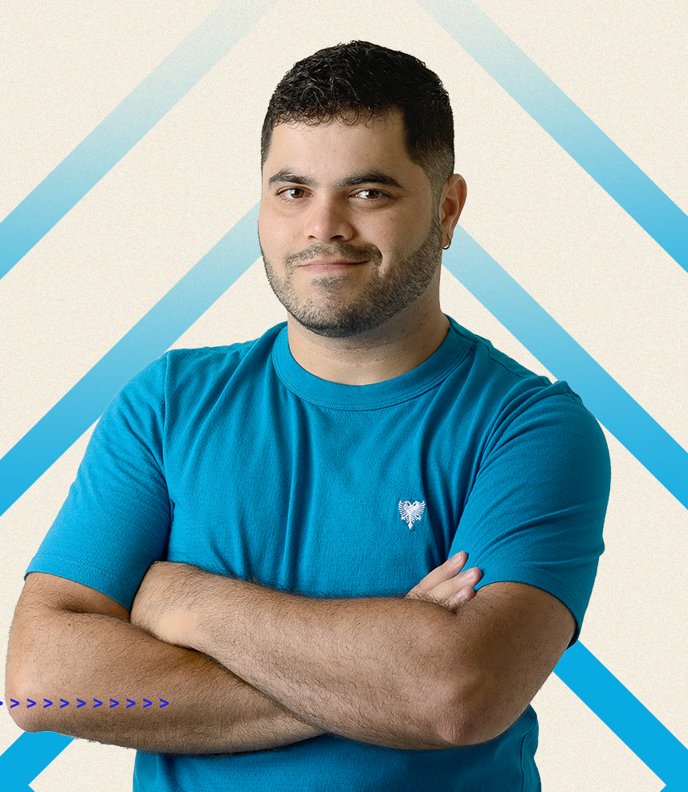

Um futuro promissor começa com um presente construtivo
Aqui, a matemática é abordada com linguagem simples, mostrando que é possível compreender conteúdos complexos e aplicá-los no dia a dia — seja para passar de ano, conquistar uma vaga na faculdade ou desenvolver o raciocínio lógico. Mais do que decorar fórmulas, o aluno é convidado a desenvolver autonomia, confiança e pensamento crítico, descobrindo que a matemática pode ser uma aliada poderosa na construção de um futuro melhor.
Comece sua jornadaPlano ENEM
Se preparar para o ENEM nunca foi tão fácil e acessível. Com nosso Plano de Estudos, você terá acesso a um cronograma completo, organizado e eficiente, pensado para quem quer otimizar o tempo e garantir um alto desempenho nas provas. Estude com quem entende de ensino, receba orientações, materiais exclusivos, dicas valiosas e fique pronto para conquistar a sua vaga na universidade. Chegou a sua vez de transformar seu futuro através da educação! Você terá 7 dias para solicitar reembolso, se não gostar das aulas devolvemos seu dinheiro!
Altamente Recomendado
6x R$19,99
Garantir minha VagaMódulos do Curso
Ao longo do curso, você vai mergulhar em conteúdos fundamentais da matemática, com explicações claras e exemplos práticos. Dos conceitos básicos às aplicações mais avançadas, cada módulo foi pensado para tornar seu aprendizado mais leve, direto e eficaz. Prepare-se para entender de verdade.


Mural dos Aprovados
Sempre tive muita dificuldade com matemática, mas tudo mudou quando conheci o professor Procopio. A forma como ele explica é tão clara e direta que comecei a entender assuntos que antes me assustavam. Graças à plataforma, consegui 920 no Enem e fui aprovado.

Lucas Menezes
Medicina Veterinária | UFRJ
Nunca fui boa com exatas e já tinha quase desistido do Enem, até começar a estudar com a plataforma do Procopio. As aulas são envolventes, os exercícios ajudam muito, e eu finalmente consegui aprender de verdade. Com isso, conquistei uma bolsa integral para Administração.

Juliana Carvalho
Administração| PROUNI
Estudar com o professor Procopio foi um divisor de águas na minha preparação. Fiz o intensivo pela plataforma e, com muito foco, consegui resolver até as questões mais difíceis. No fim, tirei 960 em matemática no Enem, algo que antes parecia impossível pra mim. Obrigada por tudo, professor!

Pedro Souza
Medicina | UFBA
A matemática sempre foi meu ponto fraco, e isso me deixava insegura para prestar vestibular. Quando conheci a plataforma do professor Procopio, percebi que aprender podia ser leve e eficiente ao mesmo tempo. Estudei com ela durante todo o ano e hoje realizo o sonho de cursar Arquitetura.

Renata Lima
Arquitetura | USP
Passei anos achando que matemática não era pra mim, até conhecer a didática do professor Procopio. Pela primeira vez, consegui acompanhar as aulas e entender o raciocínio por trás dos exercícios. Estudei com dedicação e alcancei 980 na prova do Enem. Valeu, professor!

Carlos Eduardo
Engenharia | UFMG
Sempre tive facilidade com arte e criatividade, mas matemática era meu maior desafio no vestibular. Conheci a plataforma do professor Procopio por indicação de uma amiga e me surpreendi com a didática. Consegui minha aprovação no curso de Design de Moda que sempre sonhei.
Quem é o Procópio?
O professor Rafael Procopio é uma das maiores referências no ensino de Matemática no Brasil. Fundador do projeto Matemática Rio, ele conquistou milhões de alunos com sua didática acessível, linguagem descontraída e paixão por ensinar. Autor de livros, criador de conteúdos digitais e presença marcante em redes sociais, Procopio transforma a maneira como os estudantes se relacionam com a Matemática.
Conheça o livro do professor Procópio

A mudança começa com cada um de nós

Dúvidas Frequentes
Na plataforma você conta com planos de estudos, listas de exercícios, aulas ao vivo e simulados. O professor ainda vai continuar a produção da playlist exclusivamente sobre o assunto que será postado apenas em nosso site. Temos vários outros vídeos exclusivos e muito mais virão.
O site é focado na preparação para o Enem, mas também dá suporte a outros cursos. Para quem vai fazer concursos, a recomendação é analisar o edital e provas anteriores. Assim, é possível identificar os assuntos mais cobrados. O conteúdo pode ser adaptado conforme a necessidade do aluno. A plataforma ajuda a direcionar os estudos de forma eficiente.
Alunos assinantes recebem semanalmente um Plano de Estudos com aulas gravadas, exercícios, simulados e mais. As aulas ao vivo são gratuitas e abertas a todos, mediante cadastro no "Experimente Grátis". Basta acessar no dia e horário marcados pelo professor. Após a transmissão, as aulas são editadas e inseridas na plataforma. Cadastre-se na newsletter para receber conteúdos e benefícios extras.
Sim, é possível começar após o início da turma, mas quanto mais tempo demorar, mais difícil será acompanhar o conteúdo acumulado. O ideal é iniciar em até 15 dias após o começo. Após esse prazo, o rendimento pode ser prejudicado. Nas duas primeiras semanas, os planos são mais leves para facilitar a adaptação. Em caso de dúvidas, entre em contato pelo e-mail contato@matematicario.com.br.
Para acessar todo o conteúdo do Matemática Rio com o Prof. Rafael Procopio, é necessário ter uma assinatura. Você pode escolher planos de 6, 9 ou 12 meses, conforme a disponibilidade. O plano ideal é o que cobre todo seu período de estudos, como o anual para o curso Extensivo. O pagamento pode ser feito via boleto ou cartão, com várias bandeiras aceitas. Dúvidas podem ser enviadas para contato@matematicario.com.br.
Você pode solicitar o cancelamento do plano em até 7 dias após a compra, com reembolso total. Para pagamentos por cartão, o estorno será feito em até 60 dias. Para boletos, o reembolso será via depósito em conta corrente em até 7 dias. Após esse prazo, não há reembolso. Em caso de dúvidas, entre em contato.
Localização
O Matemática Rio está localizado na cidade do Rio de Janeiro, um dos destinos mais conhecidos do Brasil. Aqui é onde todo o conteúdo é criado com muito carinho para ajudar você a transformar sua relação com a matemática.